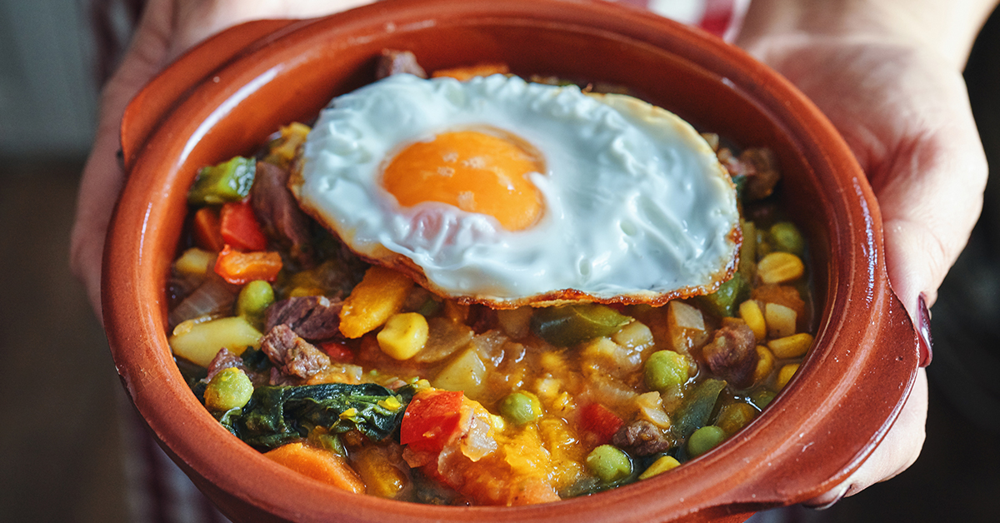

Charquicán
Back to main page

Description
Charquicán is a stew dish that is popular in Chile, Peru,
Bolivia and other countries in the Andean region, such as the Cuyo
region of Argentina.
A similar dish eaten in Northwest Argentina is called Charquisillo,
a dish made with ch’arki and rice.
Charquicán is made with ch'arki or beef, potatoes, pumpkin,
white corn, onion and sometimes peas and corn.
It was originally made from dried and salted llama meat or beef.
The modern Chilean version of Charquicán is made with minced
beef and topped with a fried egg.
Recipe :P
Ingredients
- 1 small yellow onion, diced small
- 1 pound ground beef
- 2 cups (1/2 pound) of winter squash (kabocha, butternut, or similar), peeled, cubed
- 5 red potatoes, peeled, cubed
- 1 teaspoon paprika
- 1/2 teaspoon dried Mexican oregano
- pinch of cumin
- 2 cup vegetable broth
- 1/2 cup each corn, green peas, or green beans (frozen is fine)
- salt, pepper, oil
- 6 eggs, to serve, optional
Steps!
- In a medium skillet over medium heat, put one tablespoon of oil. Add the onion and cook for 6-8 minutes, until soft.
- Add the meat and saute for 6 minutes.
- Add the squash, potatoes, salt, pepper, oregano, cumin, and paprika. Stir. Add the broth and cook cover for 15 minutes, simmering. Reduce the heat if need it.
- With a fork, mash the potatoes and squash.
- Add corn, peas, and green beans. Stir and cook for 3-4 minutes until hot.
- Fried the eggs if using.
- Taste and adjust the seasoning. Serve hot with a fried egg on top.
- ENJOY!! :P